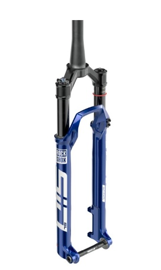
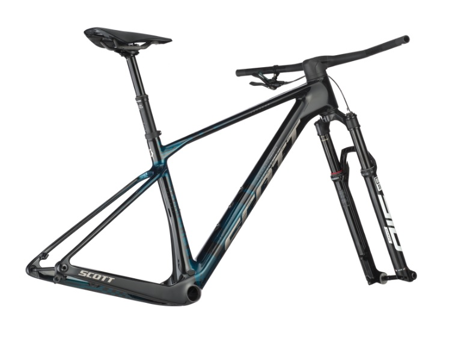
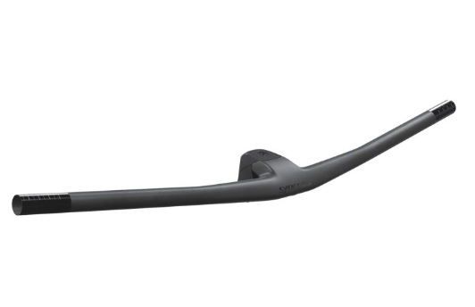
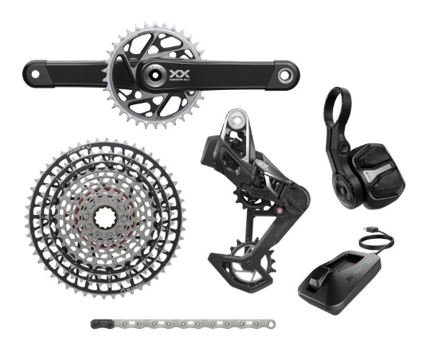
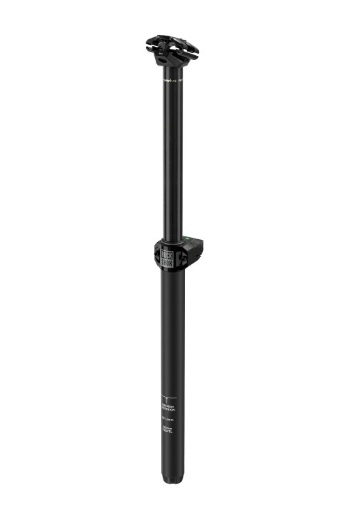
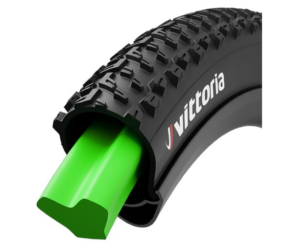

MTB (Mountain Bike – merev vázas hegyikerékpár)
Az MTB, azaz mountain bike, a terepre tervezett kerékpárok egyik legismertebb típusa. Ezeket a bringákat erdei ösvényekre, hegyi utakra és technikás terepre fejlesztették ki. A legfontosabb jellemzőjük a robusztus felépítés, a széles és mély mintázatú gumik, valamint a strapabíró alkatrészek.
Fő jellemzők
- Fék: Elsősorban hidraulikus tárcsafékek jellemzik, mivel ezek biztosítják a megbízható fékerőt nedves, sáros körülmények között.
- Teleszkóp: A merev vázas MTB első teleszkóppal rendelkezik, amely jellemzően 80–120 mm rugóúttal dolgozik. 
- Vázanyag: A vázak legtöbbször alumíniumból vagy karbonból készülnek. Az alumínium olcsóbb és strapabíróbb, míg a karbon könnyebb és merevebb. 
- Kormány: Széles, egyenes kormány jellemzi, amely jobb irányíthatóságot biztosít technikás terepen. A versenyzők manapság integrált kormányt használnak, am ia stucnival van egyben, így jobb mereveséget biztosít a ridernek. 
- VáltásA teljes felfüggesztésű MTB-k is főleg 1x rendszerrel dolgoznak, gyakran 12 sebességes hátsó váltóval, ami kiválóan alkalmas technikás, változatos terepre. A váltókar finoman reagál, a váltás gyors és pontos, még saras környezetben is. Ezek általában már elektromos váltók, amiket akkumulátor működtet. Sárban és télen nagy előnyük van bowdenes váltókkal szemben. Nem állítódnak el, cserébe drágábbak. 
- Dropper: A legtöbb alap MTB nem rendelkezik dropper nyeregcsővel, de haladóbb modellek esetén ez extra funkcióként elérhető. 
- Gumik: Manapság a legtöbb versenyzésre használt 29er-es mountain bike 29 x 2.2 -től 29 x 2.6-ig terjedő szélességű gumikat használ, amelyek kiváló tapadást biztosítanak a különböző terepviszonyok között. Beslő nélküli rendszerrel is elérhetőek, ami csökkenti a defekt kockázatát. Air-Liner-t is alkalmaznak, ami defekt esetén is megőrzi a kereket, hogy tovább lehessen veled haladni, addig amíg meg tudjuk javítani a defektet. 